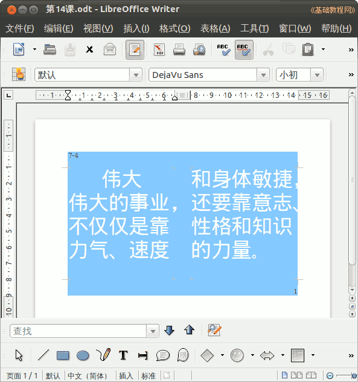

2012-2013 第二学期七年级文字处理和网页教学设计
作者：TeliuTe 来源：基础教程网
十四、学会设置分栏 返回目录 下一课（一）教学设计
1、学习目标：学会设置分栏
2、注意事项：绕过弯来，既不要跳也不要落，一楼过了二楼
3、教学过程：
1）教师准备学案和板书；
2）学生整队进入，开机抄黑板上笔记；
3）教师讲解板书演示操作；
4）学生打指法、日志、完成操作；
5）教师打勾记录学生指法成绩，检查日志和操作；
注：学生抄完笔记就开始打指法、日志，老师讲完后再继续完成；
（二）板书设计(学生笔记)
操作图示：

（三）课后记 2013-04-16 16:42
本教程由86团学校TeliuTe制作|著作权所有
基础教程网：http://teliute.org/
美丽的校园……
转载和引用本站内容，请保留作者和本站链接。